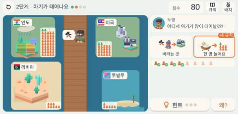
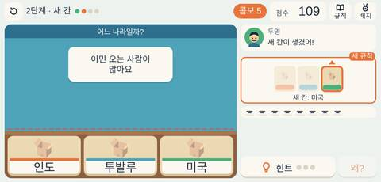

학생이 겪는 것
학생들은 아기가 태어나고 일자리를 찾아 사람이 오가는 과정을 조절하며 나라마다 인구수가 달라지는 까닭을 겪습니다. 이어지는 분류 게임에서 여러 나라의 인구 이야기를 알맞은 나라와 짝 지어 봅니다.
다루는 개념 인구수출생이주인구 이동
게임

A 개념 체험✔ 점검 통과
떠나는 사람, 오는 사람
아기가 태어나고 일자리를 찾아 사람이 오가며 나라마다 인구수가 달라지는 까닭을 겪어요.
https://wlfmghzm-dotcom.github.io/sahoe-game/games/u3a2.html
그림: Kenney (CC0)

B 떠올리기 연습✔ 점검 통과
어느 나라 이야기일까
인구수 이야기 카드를 알맞은 나라 칸에 나눠 담아요.
https://wlfmghzm-dotcom.github.io/sahoe-game/games/u3b2.html
그림: Kenney (CC0)
수업에서 쓰는 법
- QR을 TV나 칠판 화면에 띄우면 학생들이 휴대폰·태블릿 카메라로 찍어 바로 들어와요.
- 로그인·회원가입·앱 설치가 없어요. 무료이고 광고도 없어요.
- 태블릿은 가로로 두면 가장 잘 보여요.
- 한 판에 5~10분이면 충분해요. A 개념 체험으로 차시를 열고, B 떠올리기 연습으로 정리하면 좋아요.